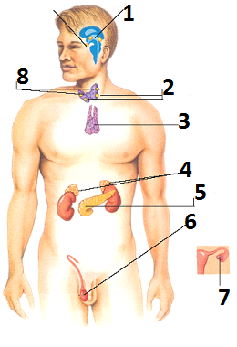
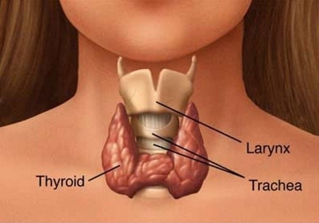

Sistem Endokrin (Hormon)
APA ITU HORMON
Hormon merupakan senyawa protein atau senyawa steroid yang dibentuk pada suatu kelenjar akan tetapi menjalankan fungsi di tempat lain. Hormon terdiri atas kelenjer hormon dan organ target
FUNGSI HORMON
- Mengatur dan mengendalikan aktifitas struktur tubuh baik sel, jaringan, ataupun organ
- Mengatur pertumbuhan, keseimbangan internal reproduksi
- Mengatur tingkah laku di bawah satu koordinasi dengan sistem saraf
LETAK HORMON

Keterangan gambar :
- Hipotalamus
- Kelenjar paratiroid
- Timus
- Adrenal
- Pankreas
- Testis (pria)
- Ovarium (wanita)
- Kelenjar tiroid
- Kelenjar hipofisis
MACAM-MACAM KELENJAR
- Kelenjer endokrin : adalah kelenjer penghasil hormon yang tidak memiliki saluran pembuangan (buntu),tapi masuk kedalam peredaran darah
- Kelenjer eksokrin : adalah kelenjer penghasil enzim yang memiliki saluran pembuangan.
MACAM-MACAM KELENJAR ENDOKRIN
- Kelenjar adrenal (kelenjar anak ginjal)
Kelenjer yang terletak di atas ginjal sehingga disebut kelenjar suprarenalis dan berbentuk seperti topi.
Hormon yang dihasilkan:
- Hormon mineralokortikoid, fungsi menyerap natrium dalam darah dan mereabsorpsi air pada ginjal
- Hormon glukokortikoid, fungsi menaikkan kadar glukosa darah dan mengubah protein menjadi glikogen di hati
- Hormon noradrenalin, fungsi mempelebar pembuluh darah, mempersempit bronkiolus, mengurangi denyut jantung dan frekuensi pernapasan, dan mempercepat laju perubahan glukosa menjadi glikogen
- Hormon epinefrin atau adrenalin, fungsi menaikkan frekuensi denyut jantung, memperkuat denyut jantung dan membantu mengubah glikogen menjadi glukosa
- Kelenjar hipofisis (pituitari)
Merupakan kelenjar buntu terbesar yang terletak di dalam lekukan tulang sela tursika di bagian tengah tulang baji.
Kelenjar hipofisis berperan dalam pertumbuhan tulang (tinggi badan), mengatur keseimbangan air dan mempengaruhi sekresi air susu
Hipofisis disebut juga master gland karena berperan penting dalam koordinasi kimia tubuh.
Terdiri atas tiga lobus :
- Lobus anterior (bagian depan).
Hormon yang dihasilkan :
- Hormon tirotropin (Thyroid Stimulating Hormon/TSH)
Fungsi : merangsang kelenjar tiroid untuk memproduksi tiroksin
- Hormon adrenokortiko tropin (ACTH)
Fungsi : merangsang korteks adrenal untuk memproduksi kortikosteroid
- Folikel stimulating hormon (FSH)
Fungsi : pada wanita merangsang perkembangan ovarium dan mengurangi sekresi estrogen. Pada pria menstimulasi testis untuk menghasilkan sperma
- Luteinizing hormon (LH)
Fungsi : pada wanita bersama estrogen menstimulasi ovulasi dan pembentukan progesteron. Pada pria menstimulasi sel-sel interstisiil pada testis untuk berkembang dan menghasilkan testosteron
- Prolaktin (luteotropic hormon/LTH)
Fungsi : menstimulasi sekresi air susu oleh kelenjar susu
- Hormon somatotrof (STH)
Fungsi : merangsang pertumbuhan tubuh terutama tulang, mengatur pembelahan, penambahan volume, dan regenerasi sel
- Hormon gonadtropin (Gonadotropic hormone/GTH)
Fungsi: mengatur pembentukan gamet dan hormone seks
- Lobus intermedia (bagian tengah)
- Hormon melanin (Melacnotil Stimulating Hormone/MSH)
Fungsi: meningkatkan pigmentasi dengan butir melanin pada kulit
- Lobus posterior (bagian belakang)
- Hormon oksitosin
Fungsi : membantu kelahiran dengan cara merangsang kontraksi otot polos pada uterus
- Hormon vasopresin atau ADH
Fungsi : mengatur kadar air dalam tubuh dan darah melalui penyerapan air oleh tubulus kontorti sehingga dapat mencegah pembentukan urine dalam jumlah banyak
- Kelenjar Tiroid (kelenjar gondok)

Berada di daerah leher dekat jakun dan kelenjar ini kaya pembuluh darah
Hormon yang dihasilkan
- Hormon tiroksin
Fungsi : proses metabolisme karbohidrat dalam tubuh yang berkaitan dengan proses menghasilkan panas tubuh, oksidasi pada sel-sel tubuh, pertumbuhan fisik, perkembangan mental, kematangan seks, mengubah glikogen menjadi glukosan dalam hati serta distribusi air dan garam dalam tubuh
- Hormon triodotironin
Fungsi : sama dengan hormon tiroksin
- Hormon kalsitonin
Fungsi : menjaga keseimbangan kalsium dalam darah
Hipersekresi tiroid menimbulkan hiperaktif tetapi badan kurus dengan tanda-tanda gugup, nadi dan napas cepat dan tidak teratur, mulut ternganga, mata lebar, meningkatnya metabolisme dan emosional
Hiposekresi menimbulkan gejala kemunduran pada fisik dan mental pada anak-anak. Pada dewasa mengakibatkan miksodema dengan ciri-ciri kegemukan dan kecerdasan menurun
- Kelenjar paratiroid (anak gondok)
Terletak di sebelah dorsal kelenjar tiroid yang berjumlah 4 buah dan menempel di belakang kelanjer kelenjer tiroid
Hormon yang dihasilkan
- Hormon kalsitonin dan parathormon
Fungsi : mengatur metebolisme kalsium dalam tubuh
- Kelenjar pangkreas (langerhans)
Terdapatnya di kelenjer usus dan kelenjer lambung
Hormon yang dihasilkan
- Hormon insulin
Fungsi : mengatur kadar gula dalam darah
- Hormon Glukagon
Fungsi : mengubah glikogen menjadi glukosa
- Kelenjar timus (kelenjar kacangan)
Kelenjer ini terletak didepan percabangan trakea yang terdiri dari 2 lobus yang berfungsi sebagai mengatur hormon pertumbuhan (GH), mengurangi aktivitas kelenjer kelamin dan pembentukan sel imun.
Hormon yang dihasilkan
- Hormon timosin
Fungsi: merangasng kerja sel limfosit
- Kelenjar gonad (kelenjar kelamin)
Pada wanita adalah ovarium yang menghasilkan hormon estrogen dan progesteron yang berfungsi dalam penebalan dan perbaikan dinding uterus. Hormon estrogen berperan dalam menentukan ciri-ciri pertumbuhan kelamin sekunder pada wanita seperti pembentukan lemak di sekitar dada, pantat dan paha serta berperan dalam menentukan warna suara, sedangkan hormon progesteron berfungsi sebagai mempersiapkan kehamilan dan melahirkan.
Pada pria terlerak di bagian testis atau buah zakar, menghasilkan hormon testosteron dan estrogen. Testosteron yang berperan dalam menentukan ciri-ciri pertumbuhan kelamin sekunder pada pria seperti janggut, cambang, kimus, otot dan pita suara,sedangkan estrogen berfungsi sebagai mengatur spermiasi
GANGGUAN PADA SISTEM HORMON
- Dwarfisme, kekerdilan akibat kekurangan GH.
- Gigantisme, keraksasaan akibat kelebihan GH.
- Akromegali, pertumbuhan tidak seimbang akibat kelebihan GH saat dewasa.
- Kretinisme, kekerdilan dan keterbelakangan mental akibat kekurangan hormon tiroid.
- Myxdema, rendahnya kecepatan metabolisme tubuh akibat kekurangan hormon tiroid.
- Gondokan, pembengkakan kelenjar tiroid akibat kelebihan hormon tiroid
- Morbus basedowi, hipermetabolisme akibat kelebihan hormon tiroid dengan gejala gugup, napas cepat tidak teratur, dan mata terbelalak.
- Graves disease, hipermetabolisme akibat kelebihan hormon tiroid yang menyebabkan penyakit autoimun.
- Von Recklinghousen, keadaan dimana kadungan kapur dalam urin meningkat, sedangkan keadaan tulang menjadi rapuh.
- Addison, kerusakan korteks adrenal yang mempengaruhi produksi hormon kortison dengan gejala kelelahan, nafsu makan berkurang, tekanan darah rendah
- Sindrom Chusing, kelebihan hormon kortison dengan gejala kelelahan, otot lemah, moonface, merah-merah pada lengan, edema, menstruasi tidak teratur.
- Tetani, turunnya kadar kapur dalam darah akibat kekurangan parathormon, memiliki gejala kejang otot, gelisah, dan kesemutan.
- Diabetes insipidus, penyakit beser atau sering buang air kecil karena kurangnya produksi ADH.
- Albino, kekurangan pigmen melanin.
- Melanisme, kelebihan pigmen melanin.
- Hipergastrinemia, peningkatan hormon gastrin dan asam klorida dalam lambung.
- Gastrinoma, tumor lambung akibat kelebihan hormon gastrin.
- Diabetes mellitus, tingginya kadar glukosa dalam darah akibat sedikitnya hormon insulin yang dihasilkan pankreas. Tingginya kadar glukosa dalam darah menyebabkan urin mengandung glukosa